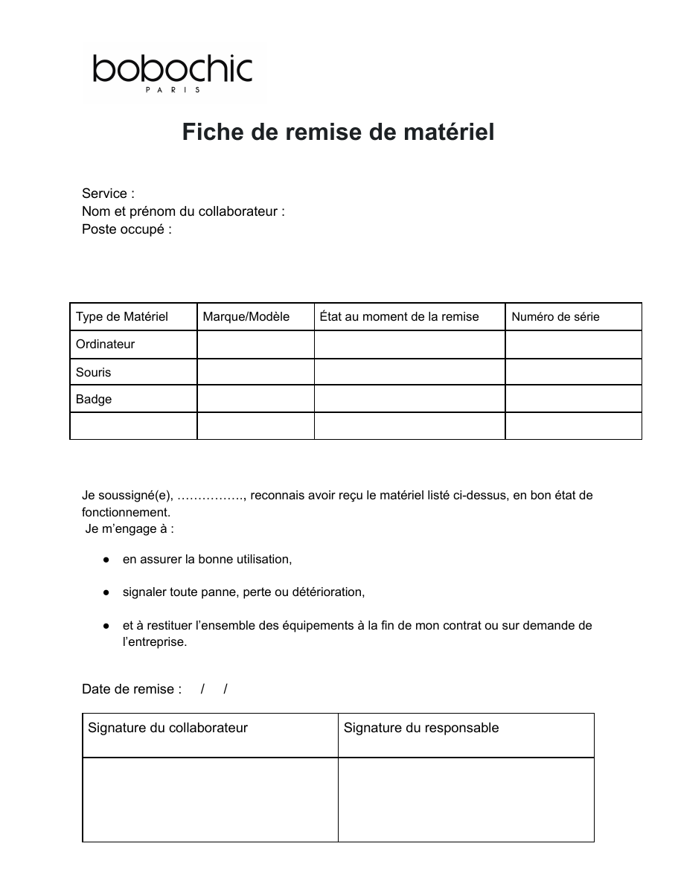
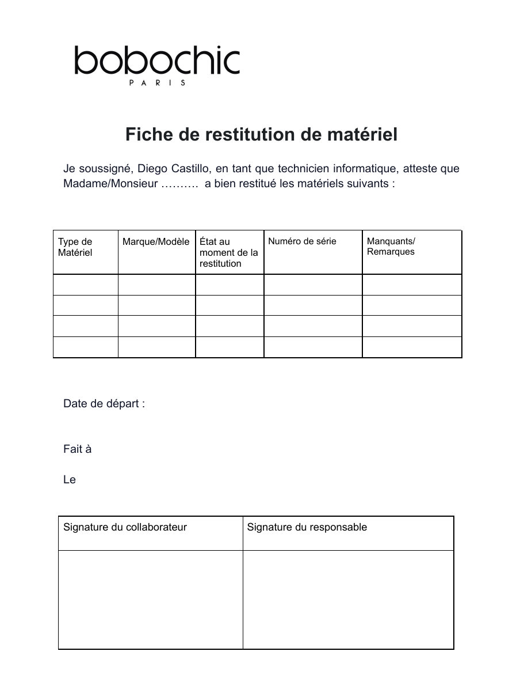

01Contexte
À mon arrivée chez Bobochic Paris en octobre 2025, le service informatique ne disposait d’aucune procédure formalisée pour l’arrivée et le départ des collaborateurs. Le matériel confié à chaque salarié (ordinateur, souris, badge…) n’était tracé par aucun document.
Sans trace écrite, il était difficile de savoir quel équipement avait été remis à qui, dans quel état, et de s’assurer de sa restitution au départ du collaborateur. Les acteurs concernés sont le collaborateur, son responsable et le service informatique, dont je suis le seul membre.
02Expression du besoin
Ce processus a constitué ma première mission dans l’entreprise. Il fallait :
- structurer l’accueil et le départ des collaborateurs sur le plan informatique ;
- tracer le matériel remis et restitué, avec son état et son numéro de série ;
- responsabiliser chaque collaborateur quant à l’usage du matériel confié ;
- pouvoir signaler d’éventuels manquants ou dégradations au moment du départ.
03Solution et mise en œuvre
J’ai conçu deux documents de référence, l’un pour l’arrivée, l’autre pour le départ, qui se complètent sur l’ensemble du cycle de vie du collaborateur dans l’entreprise.
- Identification des informations nécessaires
Service, nom et poste du collaborateur, type de matériel, marque et modèle, état au moment de la remise et numéro de série.
- Fiche de remise de matériel (onboarding)
Tableau pré-rempli avec les équipements les plus courants (ordinateur, souris, badge), engagement du collaborateur à assurer la bonne utilisation du matériel, à signaler toute panne, perte ou détérioration et à le restituer à la fin de son contrat, puis double signature du collaborateur et du responsable.
- Fiche de restitution de matériel (offboarding)
Attestation rédigée par le technicien informatique, tableau des équipements rendus avec une colonne « Manquants / Remarques », date de départ, lieu et double signature.
- Lien avec l’inventaire du parc
Le numéro de série relevé sur les fiches est le même que celui de l’inventaire du parc (réalisation 02), ce qui permet de rapprocher immédiatement un équipement de son utilisateur.
- Révision et diffusion
Relecture des deux fiches (cohérence des intitulés, mise en page sur une seule page, ajout de la colonne de remarques), puis export au format PDF.
04Tests et résultats
Mise en application. Le premier jour, le collaborateur reçoit son équipement (ordinateur, souris, badge…) et signe la fiche de remise qui détaille chaque élément confié, avec son état et son numéro de série. Cette fiche constitue une trace physique et une preuve de la remise. À son départ, la fiche de restitution est complétée et signée de la même manière, ce qui permet de vérifier que tout le matériel a bien été rendu.
Résultats. La mise en place de cette procédure a permis de structurer l’accueil et le départ des collaborateurs sur le plan informatique, de responsabiliser chacun quant à l’usage du matériel confié et de fiabiliser le suivi du parc tout au long du cycle de vie des employés.
Le processus de départ a ensuite été complété par la procédure d’archivage de la messagerie des collaborateurs sortants (réalisation 04).
05Limites et perspectives
- Les fiches sont aujourd’hui imprimées et signées à la main : une version dématérialisée avec signature électronique simplifierait leur archivage.
- Le tableau des équipements est rempli manuellement : un outil de gestion de parc pourrait le pré-remplir à partir de l’inventaire.
06Compétences mobilisées
- Gérer le patrimoine informatiqueTraçabilité des équipements remis et restitués, rapprochement avec l’inventaire par numéro de série.
- Mettre à disposition des utilisateurs un service informatiquePréparation et remise du poste de travail lors de l’arrivée d’un collaborateur.
- Travailler en mode projetCréation d’un processus inexistant, de l’analyse du besoin jusqu’aux documents finaux.
07Preuves



